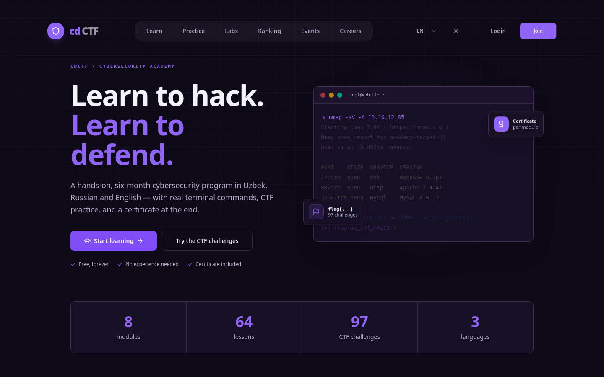
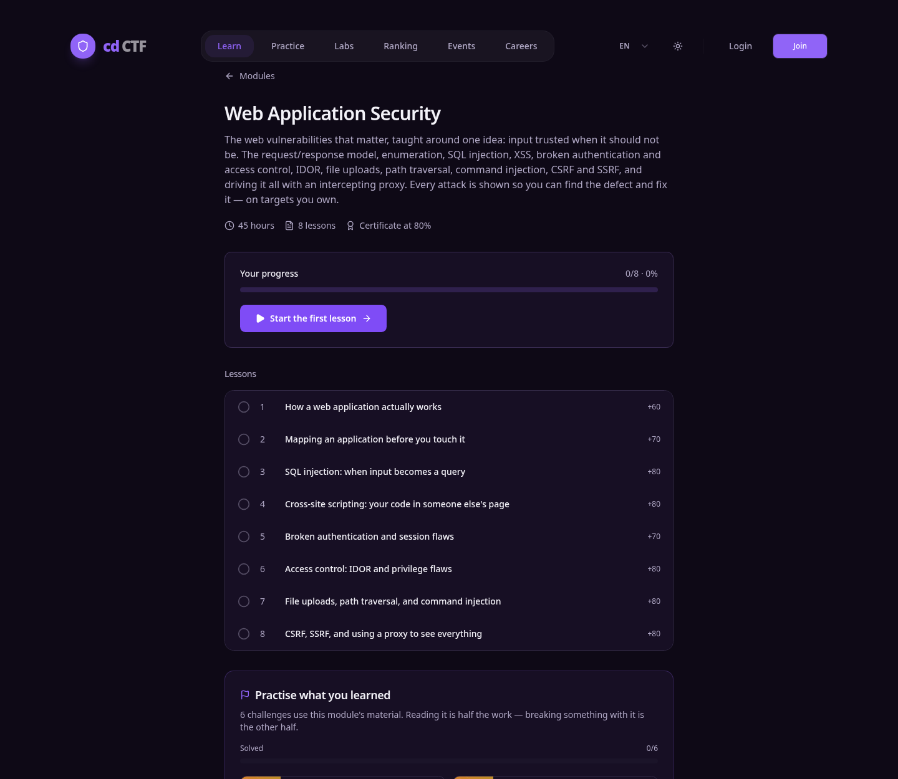
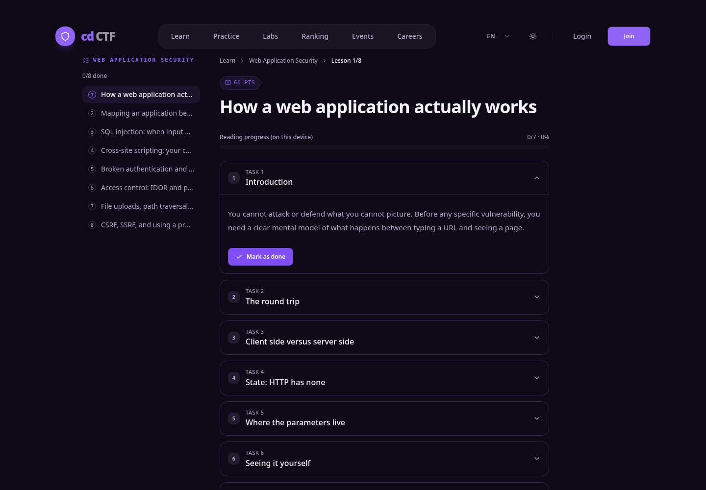
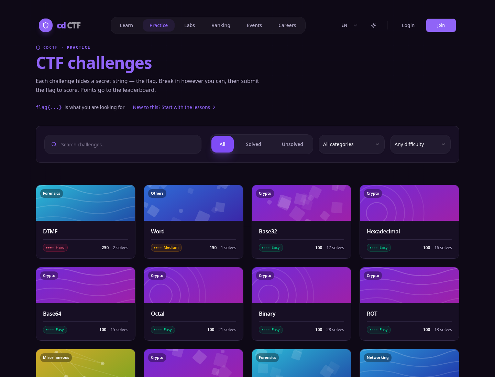
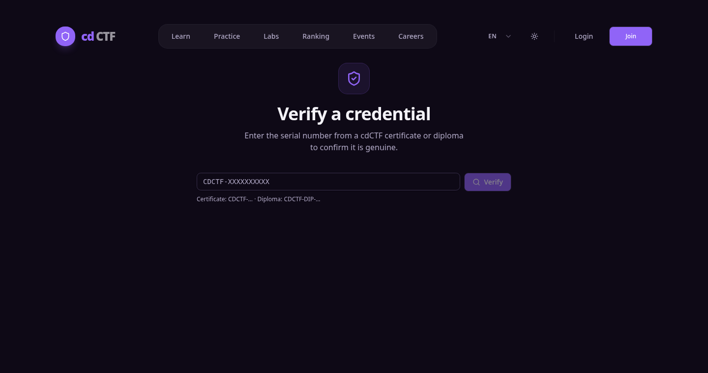
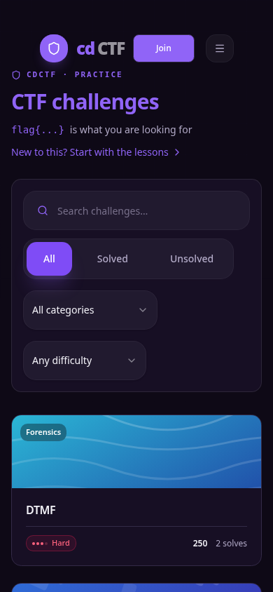

O'zbek, rus va ingliz tillarida — bepul. Darsdan amaliyotga, amaliyotdan tekshiriladigan sertifikatgacha bitta yo'lda.
TryHackMe va HackTheBox — dunyodagi ikki yetakchi platforma — faqat ingliz tilida. O'rganish materiali ham, topshiriq matni ham, jamiyat ham.
TryHackMe Premium $14/oy, HackTheBox VIP+ $25/oy. Muammo faqat pul emas: UzCard va Humo bilan chet el obunasini to'lab bo'lmaydi.
Topshiriqlar xayoliy Amerika banklari haqida. O'quvchi o'z mamlakatidagi
tizimlarni — .uz domenlar, mahalliy operatorlar — hech qachon ko'rmaydi.
Manbalar: ISC2 Cybersecurity Workforce Study · stat.uz, 2026-yil yanvar–iyun · tryhackme.com va hackthebox.com ochiq narxlari, 2026-yil iyul.

Boshqa platformalarda o'quv kursi va CTF ro'yxati ikki alohida dunyo. Bizda modul o'zi o'rgatgan mavzu bo'yicha topshiriqlarni ochib beradi — yechilmagani birinchi, osoni oldinda.
Bizning o'z ma'lumotimiz shuni ko'rsatdi: odamlar amaliyot uchun keladi va kurs borligini bilmay ketadi. Ko'prik aynan shu teshikni yopadi — va uni raqobatchilar arxitekturasi takrorlay olmaydi, chunki ularda kurs va laboratoriya alohida mahsulot.



CDCTF-XXXXXXXXXX, har bir sertifikat uchun yagona.Modul imtihoni 80% dan o'tilganda beriladi. Barcha modullar tugallanganda — dastur diplomi.

Auditda ikkita jiddiy xato topildi: darsni tugatgan foydalanuvchi tizimga kirgach CTF ro'yxatiga tashlanardi, va besh savolli dars testi majburiy to'liq ekran hamda umrbod uch urinish bilan yopiq edi. Ikkalasi ham tuzatildi. Katalog balansi (topshiriqlarning 30% i faqat kriptografiya) kontent skriptlari bilan tenglashtiriladi.
Barcha raqamlar GET /api/stats va GET /api/ctf dan taqdimot tayyorlangan kuni o'qilgan.
| TryHackMe | HackTheBox | cdCTF | |
|---|---|---|---|
| Til | Faqat ingliz | Faqat ingliz | O'zbek · rus · ingliz |
| Narx | $14 / oy | $25 / oy (VIP+) | Bepul |
| UzCard / Humo bilan to'lash | Yo'q | Yo'q | To'lov kerak emas |
| Mahalliy stsenariylar | Yo'q | Yo'q | .uz domen, mahalliy operator, Toshkent serveri |
| Kurs ↔ amaliyot bog'lanishi | Alohida mahsulot | Alohida mahsulot | Ikki tomonlama ko'prik |
| Ish beruvchi kanali | Korporativ tarif | Korporativ tarif | Talant katalogi + vakansiya taxtasi |
Narxlar 2026-yil iyul holatiga, platformalarning ochiq sahifalaridan. Bepul rejalar mavjud, lekin ular kontentning kichik qismini ochadi.
Kompaniya CTF tadbirini o'z brendi ostida o'tkazadi: logotip, sovrin, ulashiladigan tadbir sahifasi va yakunda agregat hisobot — qamrov, faollik, kunlik yechimlar.
Infratuzilma to'liq qurilgan va ishlaydi.
Ish beruvchi «ishga tayyorman» degan o'quvchilarni ko'radi — CV bo'yicha emas, haqiqatan yechgani bo'yicha saralangan. Vakansiya taxtasi va ariza oqimi ishlaydi.
Hozircha bepul; keyinchalik ish beruvchi uchun pullik.
Universitet va IT Park uchun guruh hisoblari, o'qituvchi paneli va guruh hisoboti. Talab tasdiqlangach quriladi.
Nega bepul. O'zbekistonda to'lov devori auditoriyaning katta qismini kesib tashlaydi — va bizning maqsadimiz jamiyatni o'stirish. Bepul auditoriya esa aynan homiy va ish beruvchi to'laydigan narsa.

Mahsulot muammosi hal qilingan. Qolgani — odamlarni olib kelish. Grant va inkubatsiya aynan shu bosqichda eng katta ta'sir beradi.
Til to'sig'i yo'q. To'lov to'sig'i yo'q. Kontekst begona emas. Va oxirida — ish beruvchi tekshira oladigan hujjat.
cdctf.uz · cdctf.vercel.app
github.com/Hikmatbek-dev/cdCTF
Hikmatbek Xudoyberganov Jur'at o'g'li
Telegram: @cdctf · Instagram: cdctf.uz